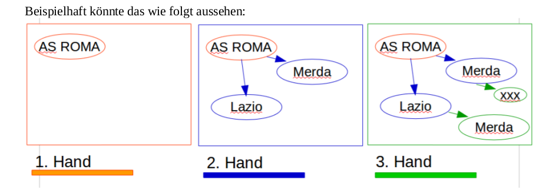

Analyzing 3000 graffiti¶
The GIAnT application (Grapical Image Annotation Application) was written initially written for Sebastian Lasch who was writing his PhD thesis at the Ludwig Maximilians Universität (LMU) Munich, Germany.
In the hope that others find it interesting I am going to describe the process how and why we designed this application to serve its first use case.
Sebastian Lasch’s dissertation is about the unique communication aspects of the graffiti in rome, also called ‘scritte murali’.

Looking at a scritte murali one can see that different authors were writing at this wall. They were overwriting and changing the sense of each other’s work.
The interaction between the different ‘hands’ (that is what we called the authors) are a key aspect of this communication method.
Before Sebastian and I met, the proposed solution for the analysis was demanding. The corpus will contain at least 3000 pictures and initially should have been build as follows:
- Identify every single token on the image and use a 5x5 raster as a rudimentary position
- Write the token (word) with its attributes line by line to a SQL database
- Add all relevant meta data by hand to the SQL database
- Store the interactions in a text format (see below)
Text format The last step would have been to write a so called transliteration and modification form. Which would have looked as follows for the scritte murali you have seen previously:
AS ROMA {{[MERDA] [~~~]} [MERDA]} LAZIO {[MERDA] [~~~]}
{{[[1900]] [[198.]]} [1927]} FIGHE ACCATTONA MIAO ... \|simb_emo_2\| ! CIAO CIAO
LA VOSTRA INVIDIA E` LA NOSTRA FORZA !!! BY I RAGAZZI DEL KENNEDI !!!
{[[//]] [xxx]} {[[//]] [xxx]} {[[//]] [xxx]} NO {[[//]] [xxx]} [[.CALE]]
The purpose for this long system was that you want to store the interaction between the tokens
in some form. Here [~~~] stands for a strike-through or [xxx] for an erasure
of the word on the left side.
Such a system would have been inspired by an archaeological system called Leidener Klammersystem.
Of course this system has many downsides:
- No automatic information processing is possible with this kind of ‘format’
- The process of creating such a string is long and exhausting
- As this is a left-bound parenthesis system every element in such a string can only have one parent and one descendant. This means that building more complex systems is close to impossible. Imaging a word from the beginning referencing the last word. You would not only have to reconstruct your whole query but it is also possible that there might be no solution to this problem.
- The attributes of an element are separated from its representation in the query
- Once you have managed to transfer this system into your SQL database you are confronted with
writing many
JOINqueries in order to get your data together.
As you can see there were some good reasons to spend time on this project and propose another system.
The big differences of the first change were:
- Think about the tokens and all the entities as nodes in a graph.
- Have as many interactions possible between them as you need (they are now the edges in the graph).
- Attach the chronological information (which hand wrote this) as one of the many attributes to nodes and relations.
And of course a Graphical User Interface would help a lot! Imagine the difference between writing the structured data of a graph in a text editor to the ease of dragging boxes around and storing the graphical editor’s content automatically in the correct format.
Now that we have gone so many steps the last was to replace the SQL backend by a graph database in which relations are ‘first citizens’. These databases are designed to store graphs efficiently and - more important - provide query languages to help in the step of information retrieval on graphs. The community version of the Neo4J graph database was chosen.
These were the steps we went from manually working on tables and Leidener Klammersystem to using an extended graphical image annotation tool that works with graphs.